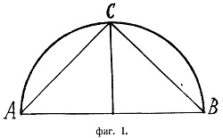
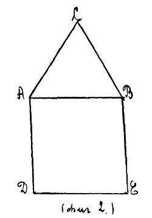

Беседа 1668 от 3877 · Беинса Дуно
Правилна преценка / Еднаква оценка. Ритмус на музиката. Стъпка в музиката
Т. м.

Ние можем да разгледаме страните на триъгълника като силови линии, а именно: страната AB, като сили, които действат във физическото тяло на човека; страната CB като сили, които действат в ума, и страната AC като сили, които действат в сърцето. Ако силите BC се прелеят в AC, увеличава се дейността на сърцето; ако силите AC се прелеят в CB, увеличава се дейността на ума. Щом се увеличи умствената дейност на човека, намалява се дейността на физическото тяло. Тази е причината, задето повечето хора днес са много нервни. Колкото е по-голяма дейността на ума, толкова по-слаб е човек. За да не се изтощава нервната му система, част от умствените сили трябва да се прелеят в сърцето. Ако се увеличи дейността на сърцето, организмът надебелява. Силите на организма са резултат на сумата от силите на ума и на сърцето. Ако тялото се усили чрезмерно, за сметка на ума и на сърцето, непременно трябва да стане едно раздвижване на силите: от тялото към ума, и от ума към сърцето. Човек трябва да бъде в постоянно движение, т.е. триъгълникът да се движи. От движението на триъгълника се образува квадрат – действието на физическите сили. Квадратът, заедно с триъгълника (фиг. 2), образуват петоъгълник – поляризиране на физическите и духовните сили в човека.

И тъй, казахме, че кръгът, т.е. кривата линия, представлява незавършен процес. Който се движи по крива линия, трябва да знае законите на вечността, защото незавършените процеси имат отношение към вечността. Който се движи по крива линия, не знае какво ще бъде състоянието му, не знае как ще се изменят отношенията му към хората, даже и към природата. Друг е въпросът, когато човек се движи по права линия. Там отношенията са определени, защото подразбират отношения между две лица. Яви ли се трета точка, линията се изкривява. В търсене на третата точка, човек се стреми нагоре, като издига перпендикуляр – идеалът, към който всеки се стреми. Когато човек си постави някакъв идеал в живота, казваме, че той е идеалист.
Каква е разликата между идеалиста и материалиста? Идеалистът е човек, който се качва по високите върхове и оттам разглежда природата. Той се движи по перпендикуляра, т.е. по височината на триъгълника. Той мечтае за много неща, които макар и непостижими, поне го движат. Той работи и с ума, и със сърцето си, вследствие на което неговият триъгълник е в постоянно движение. Материалистът пък живее повече в долината на живота. Той има само един стремеж – да нареди живота си, колкото е възможно по-добре. Той гледа на живота като на завършен процес, затова не се стреми към непостижими идеали. Всъщност, животът е непостижим. В това именно се състои красотата на живота. Поради своите разбирания за живота, материалистът изпада повече в областта на неустойчивите енергии, а идеалистът – в областта на устойчивите енергии. – Кой от двамата се намира в по-добри условия? – Идеалистът. Той черпи силите си от изворите в природата, а материалистът – от щерните. Изворът вечно тече и дава от своето изобилие, а щерната – временно. Както разчитате на извора, така ще разчитате и на всеки човек, който разбира живота. Той е свързан с разумната природа, вследствие на което е богат и неизчерпаем като нея. Дойдете ли до материалиста, на него малко можете да разчитате. – Докога можете да разчитате на материалиста? – Докато има вода в щерната.
Мнозина се оплакват, че са изгубили идеала си. – Кога губи човек идеала си? – Когато гледа на живота материалистически. Той седне пред богата трапеза, хапне си от едно, от друго ядене и като се свърши яденето, животът му се обезсмисля. Той казва, че изгубил идеала си. Значи неговият идеал се е обуславял от хората. Идеал, който е в зависимост от хората, всякога може да се изгуби. Стремете се към вечни идеали, които хората не са в състояние да прекратят. И яденето може да бъде идеал, но само тогава, когато гледате на него като на благо, което произтича от природата. Очаквате ли това благо от хората, един ден ще го имате, а на другия ден ще се прекрати. Човек трябва да яде, за да поддържа живота си, но той ще живее, докато мисли, чувства и действа. При това, в мислите, в чувствата и в постъпките му трябва да има непрекъснато движение. Движението не подразбира анархия. Щом между мислите, чувствата и постъпките настане анархия, това показва, че вътрешната връзка между тях е прекъсната. За да не дойдете до тази анархия, пазете връзката между своите мисли, чувства и постъпки.
Като ученици, вие трябва да дадете права насока на енергиите си, да не се подпушвате. Всяко подпушване води към страдания, които отклоняват човека от правия път. Затова, именно, старите философи са казали, че преди всичко човек трябва да работи съзнателно, да познае себе си. Да познае човек себе си, това значи да познае скритите сили в своя организъм, да научи законите, на които те се подчиняват. Докато не познае себе си, човек не може да се справи с окръжаващата среда. Днес и учени, и прости, като се натъкват на изпитания, не могат да се справят. Учените говорят за наука, имат знания, но не могат да си помогнат. Религиозните вярват в Бога, но като се затруднят с някоя задача, веднага иде съмнението. Дойдат ли болестите, хората изгубват и знанието, и вярата, и любовта си. Те вече не са господари на себе си, на своите сили. И току чувате да се оплакват от главоболие, от стомашно разстройство, от болки в гърдите и т.н.
На какво се дължат болестите? Една от причините за болестите се дължи на натрупване известна енергия на някои места повече, отколкото трябва. За пример, главоболието се дължи на излишък на нервна енергия в главата; стомашното разстройство се дължи на излишък от енергия на някое място в стомаха. За да се освободи от излишната енергия в известни места на организма си, човек трябва да знае причината на нейното натрупване. Щом намери причината, лесно може да се освободи. Причината може да е в неправилното съчетание в мислите. Изправете отношението между мислите си, и болката ще изчезне. Изобщо, най-малката дисхармония между мислите, чувствата и постъпките на човека води към заболяване.
За да хармонизира мислите, чувствата и постъпките си, човек трябва да се свърже със законите на природата. Има закони, които регулират мислите; има закони, които регулират чувствата и постъпките. Свърже ли се човек с тези закони, мислите и чувствата му ще потекат така правилно, както той приема естествено, спокойно и без усилие въздуха и светлината. Кой внася въздух в дробовете на човека? Кой внася светлина в очите му? – Той сам. Следователно дайте ход на чувствата и на мислите си, свободно да се проявяват, да не се спъвате. Хората сами се спъват в чувствата си и си причиняват страдания. За пример, някой се оплаква, че няма кой да го обича, и страда. Тук се вижда връзката между храненето и чувстването. Някой се оплаква, че няма кой да му сложи да яде. Колкото е право човек да страда, че няма кой да му сложи да яде, толкова е право да страда, че няма кой да го обича. Човек сам трябва да си приготвя ядене, да не очаква на хората. Ако някой иска да му приготви ядене, това е друг въпрос. Същото се отнася и до обичта. Човек трябва да обича, да не очаква другите да го обичат. Както стомахът има нужда от храна, така и сърцето се нуждае от чувства. Обичайте първо вие, за да ви обичат хората. Очаквате ли само да ви обичат, дълго време ще чакате и ще страдате.
Като ученици, вие трябва да бъдете разумни, всяко нещо да използвате на време. Имате ли вяра, ще я приложите в големите мъчнотии и изпитания. Какъв смисъл има вярата, ако не се приложи в трудни времена? Това положение е подобно на онзи, който носи тояга, а когато го нападнат кучета, бяга. Щом имаш тояга, трябва да се браниш с нея. И Мойсей имаше тояга, но докато Бог не я освети, нищо не можа да направи с нея. Когато Бог му каза, че трябва да отиде между евреите, да ги освободи, Мойсей се почувства недостоен. Той отговори: „Господи, не мога да изпълня тази мисия“. – „Хвърли тоягата си на земята!“ – му каза Господ. В същия момент простата овчарска тояга на Мойсей се превърна в змия. – „Хвани змията за опашката! Докато си свързан с мене, всичко можеш да направиш с тази тояга“ – му каза Господ.
Какво представлява тоягата? – Тя не е нищо друго, освен разумната човешка воля. Прилагайте волята си разумно, както Мойсей – своята тояга, за да постигнете всичко, каквото желаете. Жива е била тоягата на Мойсей, жива е и вашата воля. Тя показва правата посока на движението. Разумната човешка воля, т.е. магическата пръчица или правата линия показва на човека как трябва да мисли, чувства и действа, как и накъде трябва да се движи.
Дръжте в ума си образа на равностранния триъгълник, като представа за правилното развитие на човека, в умствено, сърдечно и физическо отношение. Човек не трябва да има слабо тяло, но не трябва да има и много развито тяло, за да не поглъща силите на ума и на сърцето. – Може ли, наистина, тялото да погълне силите на ума и на сърцето? – Ако не вярвате, ще опитате. По-добре е човек да вярва, да не става нужда да опитва всички неща на себе си. Защо човек да не вярва като дете? Той може да учи, докато има вярата на детето. Изгуби ли тази вяра, той става голям критик и сам се спъва в развитието си. Както човек има тяло, нагодено за физическия свят, така има и чувства – за духовния свят, и мисли – за Божествения свят. Тялото, умът и сърцето са инструментите, чрез които човек може да се прояви в трите свята. Няма ли тези инструменти, той не може да се прояви нито в един свят. Някои казват, че не разбират всичко, което се говори. – Това нищо не значи. Вие виждате слънцето, но не знаете какво има на него, какви същества живеят там. Вие живеете на земята, но и нея не познавате абсолютно. Какво има в центъра на земята, не знаете. Защо не допуснете, че в центъра на земята има това, което и в стомаха, и в главата? По спектроскопа ученият познава какви елементи се съдържат на слънцето. Защо и по мозъка да не познае какви елементи има в слънцето? Защо по мозъка човек не може да познае каква разумност съществува на слънцето? От разумността, която съществува на слънцето, можем да говорим за разумните същества, които живеят на него.
Само светлият път на Мъдростта води към Истината.
В Истината е скрит животът.
Лекция от Учителя, държана на 29 май 1931 г., София, Изгрев.